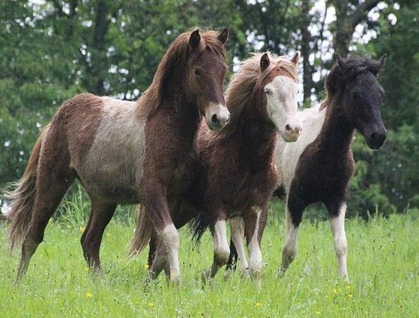

Islandpferde
Charakter.
Gesundheit. Qualität.
Islandpferde sind seit vielen Jahren ein wesentlicher Teil der Jungenwaldmühle.
Leidenschaft, die man sieht
Die Pferde stehen für Robustheit, Ausdruck und besonderen Charakter. Bei Haltung, Ausbildung und Auswahl zählt nicht nur Leistung, sondern ein stimmiges Gesamtbild.
Informationen zu aktuell verfügbaren Pferden gibt es im persönlichen Kontakt.
Pferde anfragen